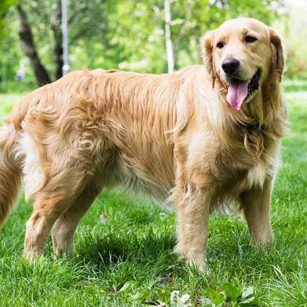

Golden
Chú chó Golden Retriever luôn yêu quý tất cả mọi người. Mọi người có nghĩa là nếu một tên trộm đột nhập vào nhà bạn, những chú chó này sẽ vui mừng như chúng đã quen biết tên trộm từ lâu rồi và có thể dẫn tên trộm đi một vòng quanh nhà của bạn. Nếu bạn dẫn chúng đi dạo, chúng sẽ muốn chào tất cả những người hay những chú chó mà gặp trên đường.
Đặc điểm
Golden Retriever là giống chó sở hữu thân hình cân đối, khỏe mạnh. Chúng có bộ lông màu từ vàng kem đến vàng nâu (màu đỏ không được công nhận). Bộ lông được cấu tạo bởi lớp lông không thấm nước bên ngoài và một lớp lông mịn dày bên trong. Chúng có cái đầu to, mõm hơi vát nhưng kèm với bộ hàm rộng và rất khỏe cùng với hàm răng sắc bén. Mũi có màu đen, mắt biểu cảm màu nâu với viền sẫm. Đôi tai cỡ nhỡ, cụp. Cổ dài, khỏe và khá cơ bắp. Ngực rộng. Đuôi dài và không bao giờ cong.